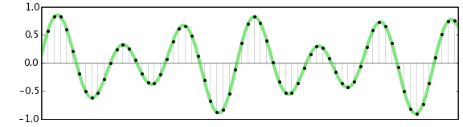

What are audio effects?
Audio effects are analog or digital devices that are used to intentionally alter how a musical instrument or other audio source sounds. Effects can be subtle or extreme, and they can be used in live or recording situations. A good example of audio effects are the “stomp boxes” that many electric guitarists use to achieve their desired sound. By chaining together many different types of effects, a musician can sculpt a unique tone and enhance their music in many ways.
Basic digital audio signal processing
All sounds we hear with our ears are pressure waves in air. Digital recording works differently: it samples the waveform at evenly-spaced timepoints, representing each sample as a precise number. Digital recordings, whether stored on a compact disc (CD), digital audio tape (DAT), or on a personal computer, do not degrade over time and can be copied perfectly without introducing any additional noise. The following image illustrates a sampled audio waveform:
Digital audio can be edited and mixed without introducing any additional noise. In addition, many digital effects can be applied to digitized audio recordings, for example, to simulate reverberation, enhance certain frequencies, or change the pitch.
Principles of digital audio signal processing
1. Simple waveforms

• Frequency is the number of cycles per second and is measured in Hertz(Hz)
• Wavelength is inversely proportional to frequency
i.e. Wavelength varies as 1/frequency
2. The Sine vs Cosine Wave and Sound

The general form of the sine wave we shall use(quite a lot of) is as follows:
y = A.sin(2π.n.Fw/Fs)
where:
A is the amplitude of the wave,
Fw is the frequency of the wave,
Fs is the sample frequency,
n is the sample index
Cosine is same as Sine (except 90 degrees out of phase)
Relationship between Amplitude,Frequency and Phase